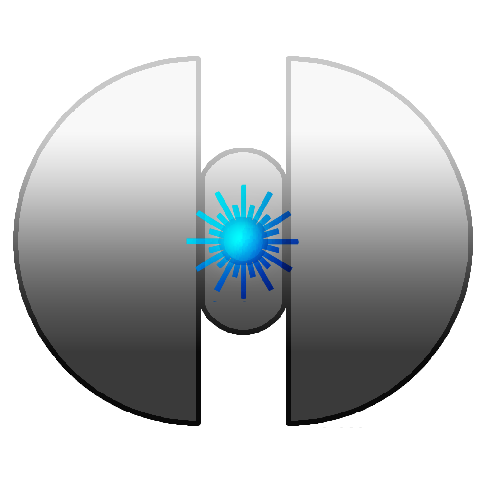
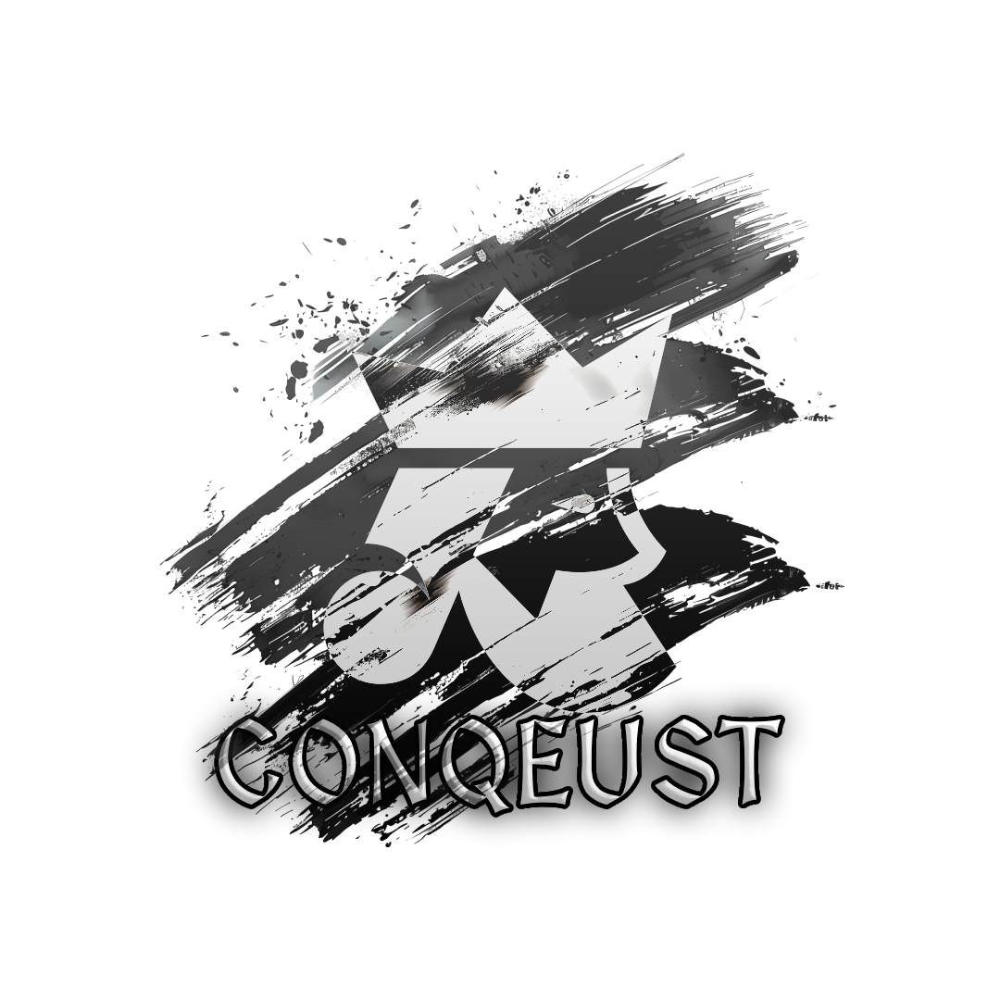

Unreal Engine
Game projecten
Hier presenteer ik een selectie van games die ik heb gebouwd in Unreal Engine.
Van volledig solo ontwikkelde projecten tot een grote internationale titel waaraan ik meewerk.

Project
Poly Men Endless Cold
Concept
Poly Men Endless Cold is een wave-based survival game die zich afspeelt in de ijskoude bergen van Noorwegen, waar overleven centraal staat en elke confrontatie zwaarder wordt dan de vorige.
Verhaal
Na een bijna-doodervaring in een sneeuwstorm ontwaakt de speler alleen in een verlaten berggebied, zonder hulp en zonder veilige uitweg.
Om te overleven moet hij niet alleen de onverbiddelijke kou trotseren, maar ook steeds dodelijkere vijandengolven doorstaan.
Rol
Als enige ontwikkelaar gaf ik deze wereld volledig vorm, van de eerste gameplay flow tot de uiteindelijke speelbare ervaring.

Project
PolyCore
Concept
PolyCore is een online multiplayer shooter waarin twee futuristische facties het tegen elkaar opnemen in snelle, competitieve gevechten.
Spelers besturen geavanceerde robots en strijden in team-based battles waar teamwork en snelle beslissingen het verschil maken.
Verhaal
In een verre toekomst is de mensheid opgesplitst in twee facties: Core Division en Null Protocol.
Wat begon als een ideologische breuk groeide uit tot een grootschalige oorlog waarin beide facties strijden om controle over technologie, grondstoffen en de toekomst van de mensheid.
Rol
Dit project heb ik volledig zelfstandig ontwikkeld, waarbij ik de technische fundamenten van de multiplayer gameplay en de speelbare combatervaring heb opgebouwd.

Project
Conquest
Concept
Conquest is een multiplayer strategiespel waarin spelers hun eigen rijk uitbouwen en proberen de wereldkaart te domineren.
De game draait rond economische groei, territoriumuitbreiding en het opbouwen van militaire macht terwijl meerdere spelers tegelijk strijden om controle.
Verhaal
Elke speler begint met een klein gebied en bouwt van daaruit stap voor stap een groter rijk op.
Steden vergroten de bevolking en inkomsten, forten laten je een groter leger onderhouden en havens openen wereldwijde handel voor een sterke economie.
Door sneller te groeien dan andere spelers en strategische allianties te vormen, proberen rijken elkaar uit te schakelen tot uiteindelijk nog maar één speler overblijft.
Rol
Dit project heb ik volledig zelfstandig ontwikkeld, waarbij ik de strategische kernsystemen en de economische gameplay van de game heb ontworpen en technisch uitgewerkt.

Project
Conqueror
Concept
Conqueror is een grootschalige RPG waarin spelers de rol aannemen van een verbannen heerser die met behulp van een leger minions zijn macht opnieuw opbouwt en stap voor stap het rijk verovert.
Verhaal
Verbannen door zijn vader begint de conqueror aan een donkere tocht om wraak te nemen en zijn recht op de troon op te eisen.
Rol
Binnen dit project werk ik als gameplay programmeur en focus ik op de implementatie van core gameplay features binnen Unreal Engine.